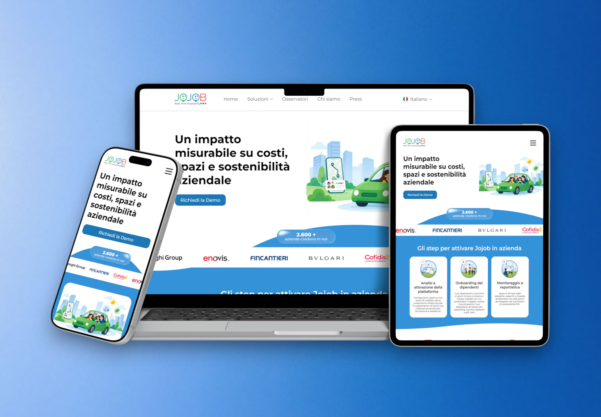
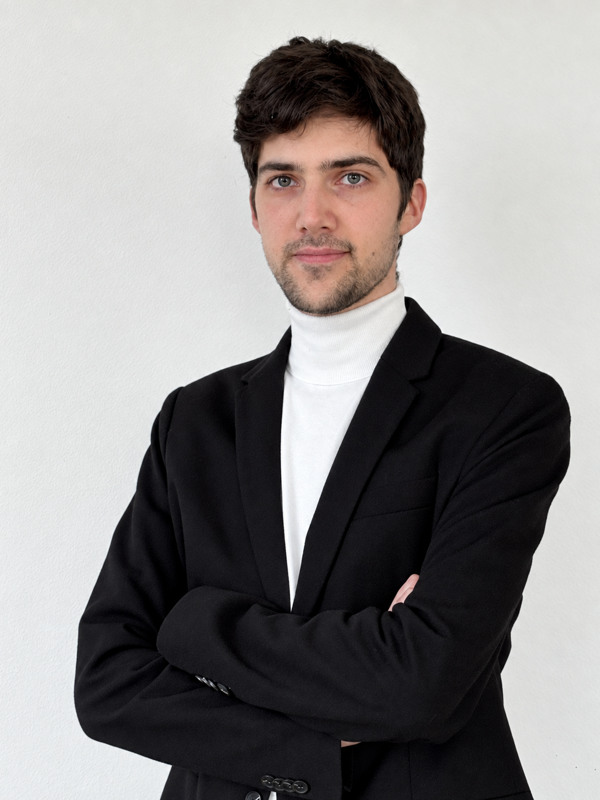

UX/UI Redesign · Website · 2026
Jojob
Piattaforma di carpooling per aziende, territori e persone.

Junior UX/UI Designer
Ciao! Sono Alessandro 👋
Unisco UX/UI Design, comunicazione e visual design per trasformare bisogni e idee in prodotti digitali chiari, intuitivi e coinvolgenti.
Scopri i progettiSelected work

UX/UI Redesign · Website · 2026
Piattaforma di carpooling per aziende, territori e persone.

UX/UI Design · Mobile App · 2024
App di volontariato per connettere persone e ONG.

UX/UI Redesign · Website · 2024
Riprogettazione della sezione "Lavora con noi" del sito web.

UX Design · Wireframing · 2026
Progettazione wireframe per la nuova homepage di LMSC.
About me
Il mio percorso inizia da una formazione in comunicazione pubblicitaria e una specializzazione in UX/UI Design: due esperienze che hanno formato il mio approccio alla progettazione.
Mi interessa comprendere i bisogni delle persone per trasformarli in esperienze digitali intuitive, funzionali e visivamente curate. Unisco ricerca, organizzazione e creatività per progettare soluzioni che abbiano un significato sia per gli utenti che per il prodotto.
La mia curiosità mi porta a continuare a imparare e sperimentare, attraverso formazione continua e progetti personali.
TOOLS
Dietro le quinte
Nel tempo libero, la curiosità e la voglia di mettermi in gioco mi hanno spinto a dare forma a due progetti per la mia città: un festival musicale e un format di dj set, seguendone organizzazione e progettazione grafica.

Gestione organizzativa · Visual Design & Social
Festival di musica indipendente organizzato a Urbino.

Gestione organizzativa · Visual Design & Social
Format di dj-set dedicato alla musica indipendente.
Se sei arrivato fin qua...